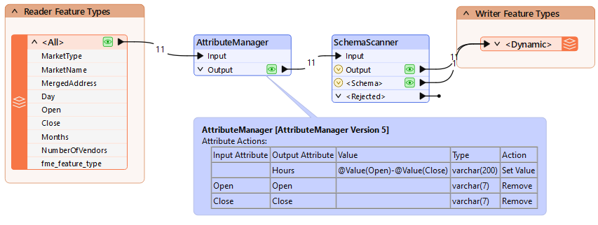
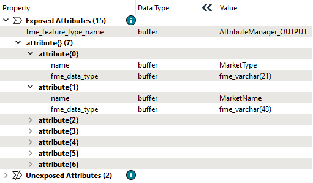
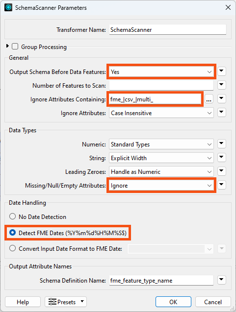
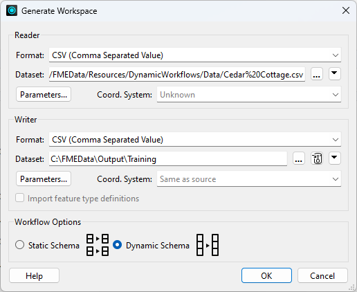
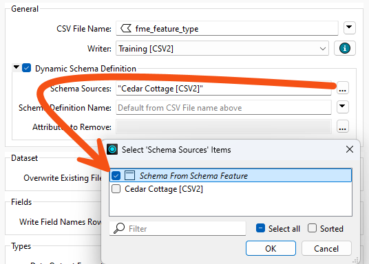
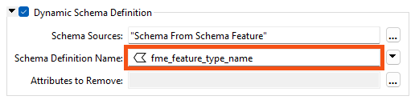
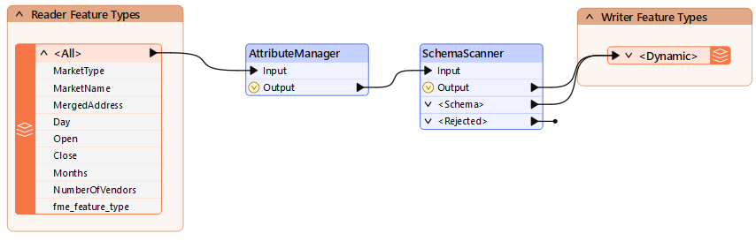

After completing this lesson, you’ll be able to:
As we’ve seen, dynamic workflows can obtain their schema from multiple locations.
One of those locations is in the workspace itself, and the SchemaScanner transformer is a key tool in making that happen.
As the name suggests, the SchemaScanner scans incoming features and produces a schema. That schema can then be used in a dynamic writer and stored in a specific FME feature.
The schema produced by this transformer may be different from the reader schema due to processes in the workspace, such as attribute renaming, removal, or addition.
In this example workspace, attributes are being added and removed from the reader schema:

The SchemaScanner generates a new schema for the output, assigns it a name, and passes it to a dynamic writer. Notice how the schema feature passes from the SchemaScanner's Schema output port to the same writer input port as incoming data. This is a somewhat unusual pattern in FME, so it's worth noting.
The dynamic writer is set up to recognize incoming schema features and will make use of them:
Notice how the Schema Source is set to “Schema From Schema Features” to inform the writer from where the schema is to be obtained. Also, notice the parameter that defines the name of the schema. This handles the situation where the same writer is fed multiple schema features.
Now, FME will write the data to the output CSV dataset using the schema modified by the AttributeManager.
A Schema Feature stores information about a schema that can be passed to a writer. The information is stored in a list attribute called attribute{}. It contains attribute names and data types, stored as attribute{}.name and attribute{}.fme_data_type:

Schema features are generated by the SchemaScanner transformer, the FeatureReader transformer, the Schema (Any Format) reader, and even the AttributePivoter transformer!
The Schema generated by the FeatureReader is a copy of the dataset schema.
Going back to the SchemaScanner, let’s look at the parameters:

The important things to note here are:
The goal here is to transform some CSV data but use a dynamic schema to take account of changes made to the data within the workspace itself.
Open FME Workbench (2024.1 or later) and click Generate Workspace. Set both Reader and Writer Format to CSV.
Set the Reader Dataset to https://s3.amazonaws.com/FMEData/FMEData/Resources/DynamicWorkflows/Data/Cedar%20Cottage.csv (or C:\FMEData\Resources\DynamicWorkflows\Data\Cedar Cottage.csv).
Set the Writer Dataset to C:\FMEData\Output\Training.
Finally, set the Workflow Options to Dynamic Schema.

Run the workspace to load the data and inspect it to see what we have.
Add an AttributeManager transformer and connect it between the reader and writer feature types. We'll use it to create a new attribute called Hours, a combination of the Open and Close attributes. Open the Text Editor for the Hours Value and set it to:
@Value(Open) - @Value(Close)
Delete the Open and Close attributes since we no longer need them.

Be sure to create “Hours” above “Open” and “Close”; otherwise, the deletion occurs first, and Hours has no content. You can use the Up/Down arrows to move attributes.
You can rerun the translation, but the output will still have the same schema. That’s because it’s still coming from the reader and proves why we need the SchemaScanner.
Place a SchemaScanner transformer after the AttributeManager and connect the Output and <Schema> ports to the writer feature type.
Check the transformer parameters. Ensure that Output Schema Before Data Features is set to Yes.
For Ignore Attributes Containing, enter:
fme_|csv_|multi_
This parameter takes a regular expression. The pipes | represent an OR logic operator, meaning the transformer will ignore attributes containing any of those three strings.
You dialog should look like this:

Click OK.
Now open the parameters for the <Dynamic> CSV writer feature type
Click the ellipsis [...] button to the right of the Schema Sources parameter. In the dialog, uncheck the box for Cedar Cottage and check the box for Schema From Schema Feature:

Click OK.
Now set the Schema Definition Name parameter to the attribute created by the SchemaScanner, fme_feature_type_name:

This example results in an output file called CSV.csv, which could have a better name. You could give it a static name instead. However, in other cases where the input feature types have table names, using the fme_feature_type_name ensures those are preserved.
Your workspace should now look like this:

Run the workspace and inspect the output. It will look like this:

Note that the Open and Close attributes are not there, but there is an attribute called Hours.
The power of the SchemaScanner lies in what would happen if the underlying data changed. In this workspace, FME will write out whatever schema it receives, but as long as there are attributes called Open and Close, FME will create a new attribute, Hours, and will not write Open or Close.
Save the workspace. We'll use it as the starting point for the next exercise.